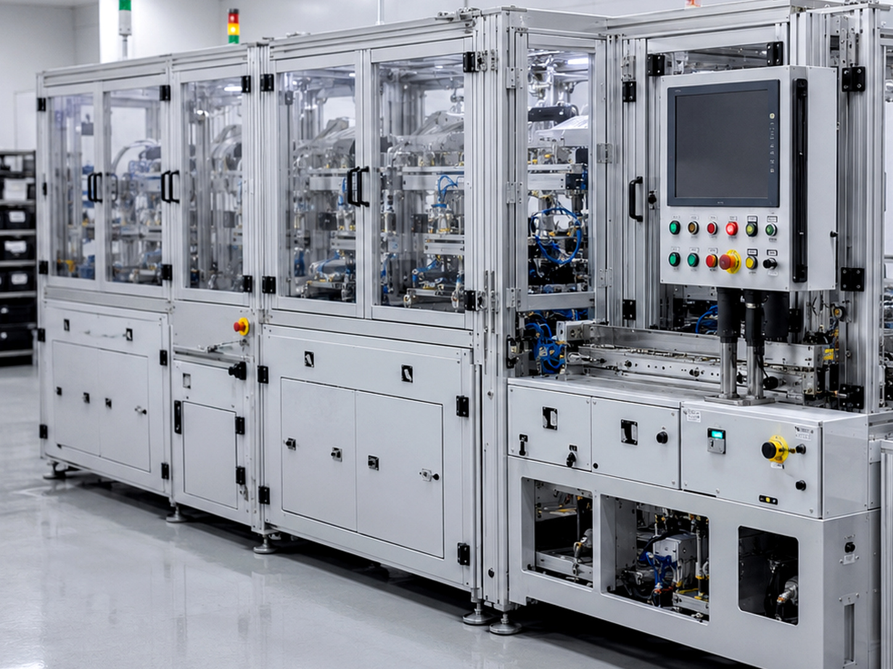
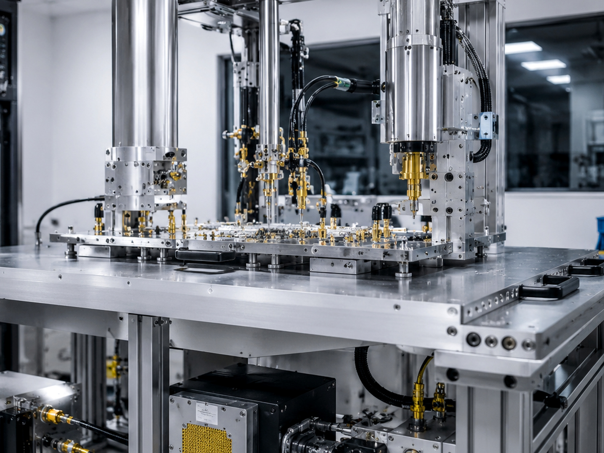
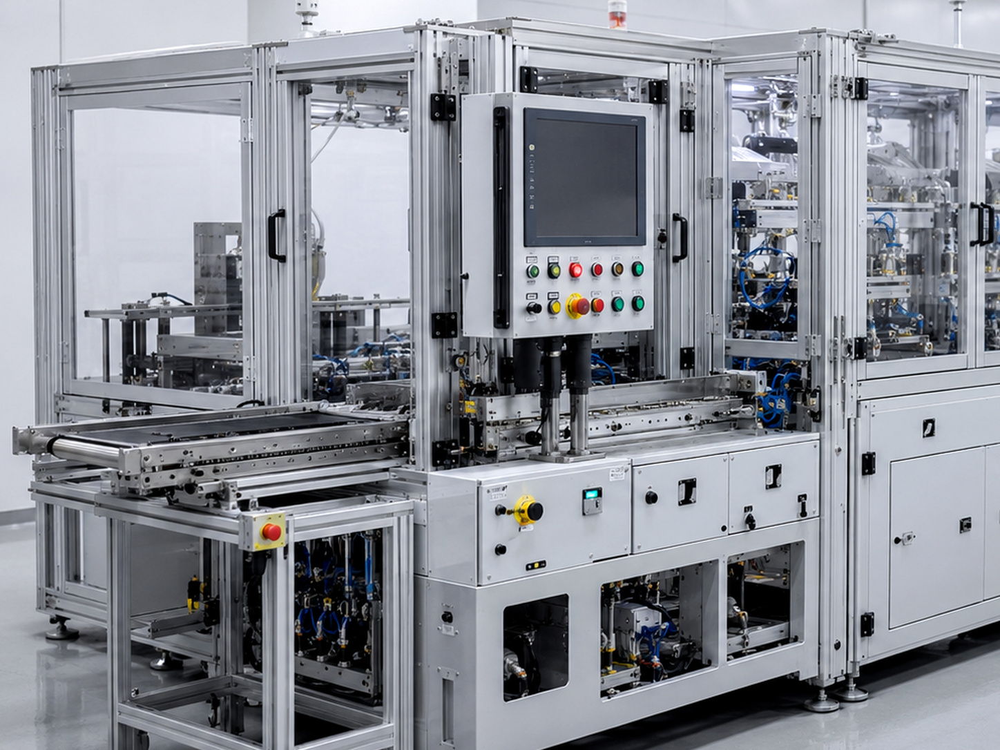

자동차·기계부품
SHAFT, ROTOR-SHAFT, CAM-SHAFT, GEAR, HUB, 조향장치 등 반복 생산 부품의 열처리·템퍼링 공정에 적용합니다.
Applications
부품 형상과 생산 조건에 따라 가열, 열처리, 브레이징, 자동화 시스템을 다르게 구성합니다.

SHAFT, ROTOR-SHAFT, CAM-SHAFT, GEAR, HUB, 조향장치 등 반복 생산 부품의 열처리·템퍼링 공정에 적용합니다.

CARBIDE, PCD TIP, END MILL, CUTTER BLADE처럼 접합부의 정밀 제어가 필요한 공구·금속부품에 적용합니다.

MOLD, MOLDING INSERT, DRILL·END MILL과 같이 형상별 맞춤 코일과 조건 제어가 필요한 공정에 대응합니다.

이송, 로딩, 언로딩, 검사, 안전 커버를 고주파 장비와 연동해 반복 생산 라인에 통합할 수 있습니다.